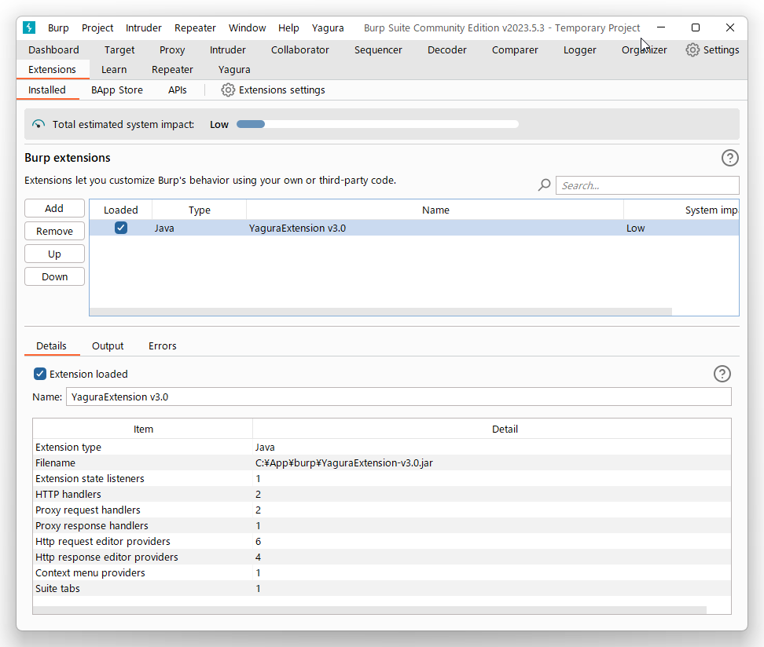
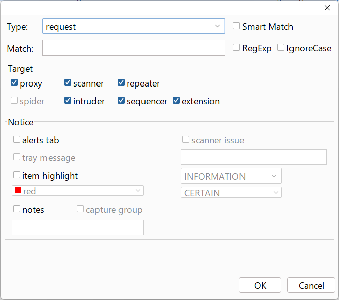
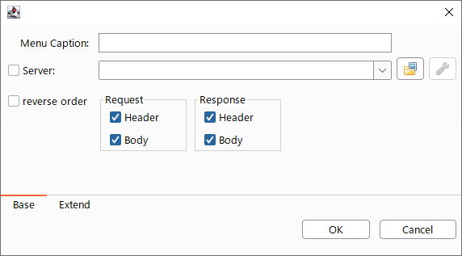
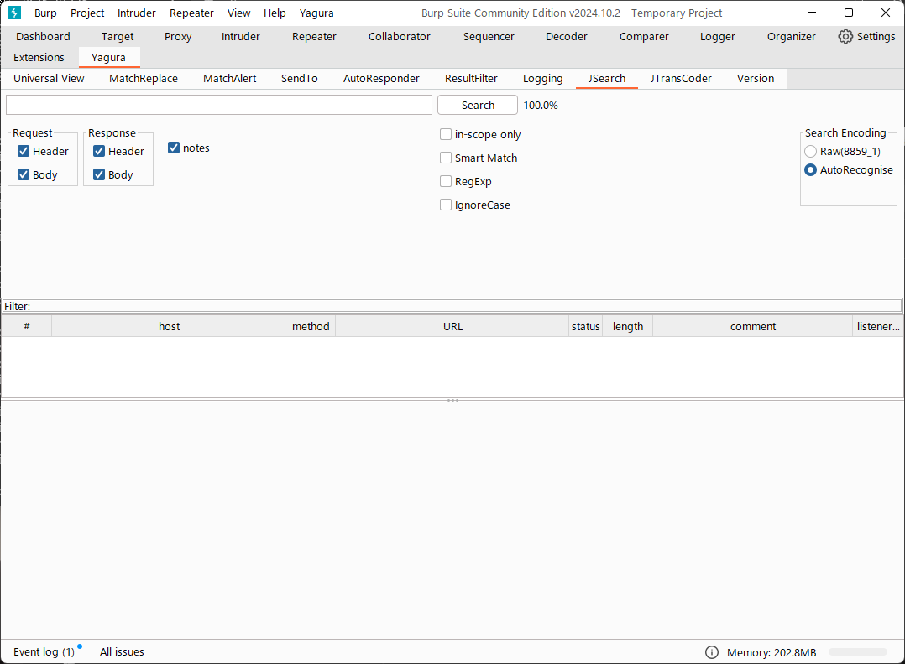

1. 動作環境
-
JRE(JDK) 8, 11 (Open JDK を推奨)(https://openjdk.java.net/)
-
1.7以上 (http://www.portswigger.net/burp/)
-
NetBean 11.0 (https://netbeans.apache.org/)
-
Meven 3.6.1 (https://maven.apache.org/)
-
asciidoc (http://asciidoc.org/)
-
gson
-
Apache License 2.0
-
Java Mail
-
CDDL 1.1, GPL 2.0 License
-
JDatePicker
-
Universal Chardet for java
-
MPL 1.1, GPL 2.0 License
-
gson
-
Use Icon
-
Creative Commons Attribution 2.5 License
2. Start up
Burp suiteの「Extender」タブから「Add」ボタンを押下後、YaguraExtender.jar を追加します。 「Loaded」にチェックをいれることで拡張がロードされ、Burp sute本体のタブに「YaguraExtender」タブが追加されます。 各種設定はこちらから行えるようになっています。

3. YaguraExtenderタブ
3.1. CJK Viewタブ

いわゆるCJK(中国語、日本語、韓国語)に対応するための設定を行うタブです。 使用頻度の高い Encoding を選択することができます。ここで選択した値は、JTransCoderやJSONのView表示画面にて選択可能なEncodingとして表示されます。
3.1.1. CJK View
- Target
-
Javaで利用可能なすべてのエンコーディングリスト一覧が表示されます。
- Select
-
選択したエンコーディング一覧されます。
- [＜]、[＞]ボタン
-
選択したエンコーディングをTargetに移動もしくは、Selectに移動します。
- [Up]、[Down]ボタン
-
選択したエンコーディングの順番を移動します。 ここでの順番が、エンコーディングに表示される順番になります。
- [Reset]ボタン
-
選択された言語のエンコーディングをデフォルトに設定します。
- [clip bord auto decode]チェックボックス
-
チェック時、Burp suiteからクリップボードにコピーされた文字列を自動デコードし、他のアプリケーションに文字化けせずに貼り付けられるようにします。 クリップボード内のバイト文字列から文字コードを推測しているため、判定に失敗する場合があります。
現在のバージョンではサポートされていません。
3.1.2. CJK Message View
- [Cenerate PoC]チェックボックス
-
メッセージタブにCenerate PoCタブを表示するようにします。
- [HTML Comment]チェックボックス
-
メッセージタブにHTML Commentタブを表示するようにします。
- [JSON]チェックボックス
-
メッセージタブにJSONタブを表示するようにします。
- [JWT]チェックボックス
-
メッセージタブにJWTタブを表示するようにします。
- [Universal Raw]チェックボックス
-
メッセージタブにCJKに対応したRawタブを表示するようにします。 現時点ではリードオンリーです。
- [Universal Param]チェックボックス
-
メッセージタブにCJKに対応したParamタブを表示するようにします。 現時点ではリードオンリーです。
3.2. MatchReplaceタブ

Burp sute 本体の Proxy ⇒ Optionタブの Match and Replace の拡張になります。複数の Match and Replace を作成して切り替えられます。 置換文字列として正規表現の前方参照を指定できます。Burp本体の Match and Replace とは独自実装となっていて、本体側のMatch and Replaceが評価されたあと拡張側のMatch and Replaceが評価されます。
3.2.1. MatchReplace
- [Select]ボタン
-
選択したMatchReplaceを適用します。 適用済みを再度選択した場合は、解除されます。
- [New]ボタン
-
MatchReplaceを新規作成します。 空のMatchReplaceItemダイヤログが表示されます。
- [Edit]ボタン
-
選択したMatchReplaceを編集します。 選択した内容のMatchReplaceItemダイヤログが表示されます。
- [Remove]ボタン
-
選択したMatchReplaceを削除します。
- [Up]、[Down]ボタン
-
選択したMatchReplaceの順番を移動します。
3.2.2. MatchReplace ダイヤログ
- [in-scope only]チェックボックス
-
ターゲットをBurpのTargetタブのscopeにマッチするものに限定します。
- [burp import match and replace rule]ボタン
-
現在のBurpのmatch and replace設定をインポートします。
現在のバージョンではサポートされていません。 - [Edit]ボタン
-
選択した MatchReplace を編集します。
- [Remove]ボタン
-
選択した MatchReplace を削除します。
- [Up]、[Down]ボタン
-
選択した MatchReplace Item の順番を移動します。
- [All Clear]ボタン
-
リストをすべて削除します。
- [Add]、[Update]ボタン
-
MatchReplace を追加します。編集中の場合は更新します。
3.2.3. MatchReplace Item 編集ダイヤログ

- Type(置換対象)
-
request heder,request body,response heder,response bodyのいずれかから選択します。
- Match(置換前)
-
置換対象の置換前の文字列を入力します。
- Replace(置換後)
-
置換対象の置換後の文字列を入力します。 置換対象に request heder,response hederが選択されている場合でかつ置換後の文字のみを入力した場合はHeder行の追加になります。 また、$1、$2などのキャプチャグループを指定することができます。 いわゆるアスキー文字以外をここには指定することはできません。指定した場合、文字は、?に変換されてしまいます。 アスキー文字以外を指定する場合は、メタ文字を利用します。
- [Regexp]チェックボックス
-
チェック時、正規表現を有効にします。
- [IgnoreCase]チェックボックス
-
チェック時、大文字小文字を無視します。
- [Metachar]チェックボックス
-
メタ文字を有効にします。 以下のメタ文字が利用可能です。
| メタ文字 | 変換文字 |
|---|---|
\r |
CR(0x0d) に変換 |
\n |
LF(0x0a) に変換 |
\b |
0x08 に変換 |
\f |
0x0c に変換 |
\t |
TAB(0x09) に変換 |
\v |
0x0b に変換 |
\xhh |
16進表記、 hhには16進文字を2桁指定する。バイト列そのままに変換したい場合に利用します。 |
\uhhhh |
Unicode表記、 hhhhにはUnicodeコードを16進指定する。Unicode文字は推測したレスポンスの推測した文字コードに自動で変換されます。対応する文字が存在しない場合、?に変換されます。 |
3.3. MatchAlertタブ

指定した文字列にマッチする文字がレスポンスに現れた場合に通知してくれます。 ExceptionなどのErrorCode系の文字列を登録することを想定しています。 通知方法には以下の５つの方法があり、同時に複数の方法を選択できます
-
BurpのAlertsタブにて通知する方法
-
タスクトレイのメッセージにて通知する方法
現在のバージョンではサポートされていません。 -
マッチしたヒストリのHighlightColorを変更する方法
proxyにチェックが入っている場合にしか意味がありません。 -
マッチしたヒストリのCommentを変更する方法
proxyにチェックが入っている場合にしか意味がありません。 -
マッチした内容と指定した値にてScannerのIssueを作成します。
3.3.1. MatchAlert
- [Enable Alert]チェックボックス
-
チェック時にMatchAlert機能を有効にします。
- [Edit]ボタン
-
選択した MatchAlert Item を編集します。
- [Remove]ボタン
-
選択した MatchAlert Item を削除します。
- [Add]、[Update]ボタン
-
MatchAlert Item を追加します。編集中時は更新します。
3.3.2. MatchAlert Item 編集ダイヤログ

- Type(検索対象)
-
request,responseのいずれかから選択
- Match(検索文字列)
-
マッチさせたい文字列を入力します。
- Target(アラート対象)
-
proxy,repeater,spider,intruder,scanner,sequencer チェックした対象がMatchAlertの対象になります。
- [Regexp]チェックボックス
-
チェック時正規表現を有効にします。
- [IgnoreCase]チェックボックス
-
チェック時大文字小文字を無視します。
- [alert tabs]チェックボックス
-
Burp suite のalertsが通知先になります。
- [try message]チェックボックス
-
トレイのメッセージが通知先になります。 現在のバージョンではサポートされていません。
- [Highlight Color]チェックボックス
-
文字列がマッチした場合、該当のBurpのHistoryのHighlightColorが指定した色になります
proxyログにチェックした場合のみ有効です。 - [comment]チェックボックス
-
文字列がマッチした場合、該当のBurpのHistoryのCommentが指定したコメントになります
proxyログにチェックした場合のみ有効です。 - [scanner issue]チェックボックス
-
文字列がマッチした場合、該当のScannerのIssueを作成します。
3.4. SendToタブ

Burpがもつ拡張メニューを利用した機能です。 BurpのHistory等から表示される右クリックのメニューを増やすことができ、 メニューから指定した機能を呼び出すことができます。送られる内容は、選択したHistoryのリクエストとレスポンスの内容になります。
3.4.1. SendTo
- [Send To Submenu]チェックボックス
-
チェックした場合、Send To Menuをサブメニューで表示します。
- [Edit]ボタン
-
選択したSendToItemを編集します。 選択した内容のSendToItemの編集ダイヤログが表示されます。
- [Remove]ボタン
-
選択したSendToItemを削除します。
- [Up]、[Down]ボタン
-
選択したSendToItemの順番を移動します。 ここでの順番が、右クリックのメニューに表示される順番になります。
- [Add]ボタン
-
SendToItemを追加します。 空のSendToItemの編集ダイヤログが表示されます。
3.4.2. SendToItem 編集ダイヤログ
SendToには、Baseタブと、Extendタブがあります。 Baseタブでは、バイナリエディタやファイル比較ツール等を登録すると便利です。 右クリックからエディタを呼び出すと、一時的に作られたファイルを引数にしてバイナリエディタが起動されます。 比較ツールの場合、2つHistoryを選択することで比較することができます。 これは BurpのHEX ダンプやCompare機能が使いにくいためにつくりました。
ExtendタブにはBaseタブでは対応ができない便利な機能をあつめてます。
3.4.3. Baseタブ

- Menu Caption
-
メニュー名
- Target
-
任意のバイナリエディタやファイル比較ツール等の実行パスを記載します。 serverにチェックが入ってる場合は、http:// または https:// で始まるURLを書きます。
- [server]チェックボックス
-
サーバに送信する場合にチェックします。 serverにチェックが入ってる場合は、Target に記載されたURLに対してmultipartのデータを送ります。
- [reverse order]チェックボックス
-
選択したリストの逆順に送信をおこないます。
- [requset]、[response]チェックボックス
-
リクエストの requsetまたは、responseをチェックした場合に登録したTargetに送ります。
リクエストおよびレスポンスはヘッダおよびボディのいずれかの送信を選択できます。
送信される multipart のデータ
- host
-
ホスト名
- port
-
ポート名
- protocol
-
protocol名(httpまたは、https)
- url
-
url文字列
- requset
-
リクエスト
- response
-
レスポンス
- comment
-
コメント
- highlight
-
選択した Highlight Color 以下のいずれかの値になります。
white, red, orange, yellow, green, cyan, blue, pink, magenta, gray
white は選択されていない状態と等価です。 - encoding
-
推測エンコーディング
Content-Type: multipart/form-data; boundary=---------------------------265001916915724 Content-Length: 988 -----------------------------265001916915724 Content-Disposition: form-data; name="host" example.jp -----------------------------265001916915724 Content-Disposition: form-data; name="port" 80 -----------------------------265001916915724 Content-Disposition: form-data; name="protocol" http -----------------------------265001916915724 Content-Disposition: form-data; name="url" http://example.jp/ -----------------------------265001916915724 Content-Disposition: form-data; name="comment" -----------------------------265001916915724 Content-Disposition: form-data; name="highlight" red -----------------------------265001916915724 Content-Disposition: form-data; name="request"; filename="request" Content-Type: text/plain request header and body -----------------------------265001916915724 Content-Disposition: form-data; name="response"; filename="response" Content-Type: text/plain Response header and body -----------------------------265001916915724 Content-Disposition: form-data; name="encoding" UTF-8 -----------------------------265001916915724--
現時点ではこの形式をうけとることができる（公開されている）Webアプリはありません。 sample/cgi-bin/sendto.cgi にはこの形式を受け取って表示するだけのCGIアプリケーションのサンプルをおいています。実装したい場合はこちらを参考にしてください。
3.4.4. Extendタブ

- request and response to file
-
レスポンスのボディの部分のみをファイルに保存します。
- send to jtranscoder
-
JTransCoder のInputに選択した文字列を送ります。
- paste from jtranscoder
-
JTransCoder のOutputから文字列を貼り付けます。
- paste from clipboard
-
クリップボードから指定したエンコーディングにて文字列を貼り付けます。
- message info copy
-
message の情報をクリップボードにコピーします。
- add host to scope
-
URLのスキームとホストをscopeに追加します。
3.5. Loggingタブ

ログの自動ロギング機能です。 この機能では、毎回ログの選択を行わなくても自動でログを 保存してくれます。
3.5.1. Logging
- [auto logging]チェックボックス
-
チェックすると自動でログを記録します。LogDirで指定したディレクトリに作成されます。
- Log Dir
-
ログを作成するディレクトリを指定します。 日付形式(burp_yyyyMMdd)のディレクトリが作成されます。 同じ日付が既に存在する場合は、その日付のディレクトリが使われます。出力するログファイル名が存在した場合は追記されます。
- Log size
-
ログファイルの上限サイズを指定します。ファイル上限に達した場合は新しい名前でログが作成されます。 ログサイズの上限に達した場合は、.1,.2のように付加されていきます。
proxy-message.log proxy-message.log.1 proxy-message.log.2 :
0を指定した場合は上限はありません。
Logging target
- [ProxyLog]チェックボックス
-
Match and Replace や Inspecter での変更後の値のProxyLogが記録されます。
- [ToolLog]チェックボックス
-
各種Toolのログの値が記録されます。
- [history is included]チェックボックス
-
auto loggingがオフの状態でのみチェックできます。 チェックすると現時点でHistoryに記録されているすべてののログをファイルに記録します。
- [Exclude Extension]チェックボックス
-
設定された拡張子をロギングから除外します。
3.6. JSearchタブ

JSearch タブはProxyのHistory一覧から文字を検索するための機能です。
3.6.1. JSearch
- [Search]ボタン
-
ProxyのHistory一覧からテキストボックスに入力した値で検索します。
- [Smart Match]チェックボックス
-
HTMLエスケープ、URLエンコードなど複数のエスケープ考慮した検索を実行します。 正規表現は有効にできません。
- [Regexp]チェックボックス
-
チェック時正規表現を有効にします。
- [IgnoreCase]チェックボックス
-
チェック時大文字小文字を無視します。
- [in-scope only]チェックボックス
-
検索をBurpのTargetタブのscopeにマッチするものに限定します。
- request
-
検索対象をリクエスト(Header,Body)に限定します。
- response
-
検索対象をレスポンス(Header,Body)に限定します。
- [comment]チェックボックス
-
検索対象にコメントを含めます。
- Search Encoding
-
検索時のエンコーディングを指定します。
3.7. JTransCoderタブ
Transcoder タブは各種エンコード、デコードを行うための機能です。
3.7.1. Translator

- Encode Type
-
Encode時の変換する対象の文字列を指定します。
- Convert Case
-
文字がエンコードされたときの16進表記を大文字にするか小文字するかを指定します。
- NewLineMode
-
エディタの改行コードを指定します。
- View
-
lineWrap にチェックすると表示が折り返されます。
- Encodeing
-
変換する文字のエンコーディングを指定します。コンボボックスで選択可能なエンコーディングは、Encodingタブで設定したものが表示されます。
Raw にチェックすると ISO-8859_1 にてエンコード、デコードします。
Guess にチェックすると文字コードを自動で判定してエンコード、デコードします。 - [Clear]ボタン
-
InputおよびOutputの内容をクリアします。
- [Output ⇒ Input]ボタン
-
Outputの内容をInputに送ります。
- [Output Copy]ボタン
-
Outputの内容をクリップボードに送ります。
- Historyコンボボックス
-
変換した履歴が記録されており、選択すると以前の変換を取得できます。
Encode/Decode
- [Smart Decode]ボタン
-
文字列の形式を自動判定しデコードします。
- [Encode]/[Decode]ボタン
-
選択した変換方式でエンコード、デコード変換を行います。
チェックしたエンコード/デコードを行います。
- URL(%hh)
-
URLエンコード、デコードを行います。
- URL(%uhhhh)
-
Unicode形式のURLエンコード、デコードを行います。
- Base64
-
Base64形式のエンコード、デコードを行います。
- 64 newline
-
Base64形式のエンコード時に64文字で改行を行う場合に指定します。
- 76 newline
-
Base64形式のエンコード時に76文字で改行を行う場合に指定します。
- Padding
-
Base64形式のエンコード時にパディングするかを指定します。
- Base64URLSafe
-
Base64 URLSafe形式のエンコード、デコードを行います。
- uuencode
-
uuencode形式のエンコード、デコードを行います。
- QuotedPrintable
-
QuotedPrintable形式のエンコード、デコードを行います。
- Punycode
-
Punycodeエンコード、デコードを行います。
- HTML(<,>,",')
-
HTMLのエンコード、デコードを行います。 エンコードは、「<,>,",'」のみ行われます。
- &#d;
-
10進数形式の実体参照形式のエンコード、デコードを行います。
- &#xhh;
-
16進数形式の実体参照形式のエンコード、デコードを行います。
- \xhh;(unicode)
-
unicodeコード単位で16進数形式によるエンコード、デコードを行います。
- \xhh;(byte)
-
byteコード単位で16進数形式によるエンコード、デコードを行います。
- \ooo;
-
8進数形式によるエンコード、デコードを行います。
- \uhhhh;
-
Unicode形式によるエンコード、デコードを行います。
- Gzip
-
Gzipによる圧縮、解凍を行います。
- ZLIB
-
ZLIBによる圧縮、解凍を行います。
- UTF-7
-
UTF-7のエンコード、デコードを行います。
- UTF-8
-
UTF-8のエンコードを行います。2バイト表現、3バイト表現、4バイト表現をURLエンコードします。
- C Lang
-
C言語形式のエスケープを行います。
- SQL
-
SQL言語形式のエスケープを行います。
- Regex
-
正規表現のエスケープを行います。
Format
Minify: XMLやJSONを圧縮します。
Beautify: XMLやJSONを整形します。
- [Smart Format]ボタン
-
文字列を整形します。XMLおよびJSONの整形に対応しています。
Regex
- Smart Math
-
Smart Mathは、各種エスケープを考慮したマッチを行うための正規表現を生成します。
- with Byte
-
チェック時、Smart Mathにバイトマッチを考慮した正規表現を含めます。
Hash/Checksum
テキストエリアに入力されている値でハッシュ値計算を行います。
- md2
-
md2によるハッシュを求めます
- md5
-
md5によるハッシュを求めます
- sha1
-
sha1によるハッシュを求めます
- sha256
-
sha256によるハッシュを求めます
- sha384
-
sha384によるハッシュを求めます
- sha512
-
sha512によるハッシュを求めます
- CRC32
-
crc32によるチェックサムを求めます
- Adler-32
-
Adlerによるチェックサムを求めます
3.7.2. Base Converter タブ

入力した値を2,8,10,16進数に変換します。
- Bin
-
2進数に変換した値を表示します。
- Oct
-
8進数に変換した値を表示します。
- Dec
-
10進数に変換した値を表示します
- Hex
-
16進数に変換した値を表示します
3.7.3. Generaterタブ
Generater には、sequenceタブとrandomタブがあります。
sequenceタブは連続する文字リストを生成するための簡易的な機能です。

- 生成書式文字列入力
-
C言語のprintf形式の書式文字列を入力します。 書式文字列は数字関係の書式を一つしか指定できません。
- start
-
リストの開始の数字を入力します。
- end
-
リストの終了の数字を入力します。終了の数字まで生成されます。
- step
-
startからendまでの数字の増加数を指定します。

- 生成書式文字列入力
-
Java言語のDateTimeFormatter形式の書式文字列を入力します。
- start
-
リストの開始の日付を入力します。
- end
-
リストの終了の日付を入力します。終了の日付まで生成されます。
- step
-
startからendまでの日付の増加数を指定します。
- [generate]ボタン
-
指定した情報でリストを生成します。
- [List Copy]ボタン
-
生成したリストをクリップボードに出力します。
- [Save to file]ボタン
-
生成したリストをファイルに出力します。
randomタブはランダムな文字リストを生成するための簡易的な機能です。

- Character
-
Characterは生成する文字の種類を指定します。
- Character length
-
生成する文字数の長さを指定します。
- generator count
-
生成する個数を入力します。
- [generate]ボタン
-
指定した情報でリストを生成します。
- [List Copy]ボタン
-
生成したリストをクリップボードに出力します。
- [Save to file]ボタン
-
生成したリストをファイルに出力します。
3.8. Generate CSRF PoC
主にCSRF(クロスサイトリクエストフォージェリ)のPoCを作成するための機能です。
ProxyのHistoryタブなどのリクエストを確認可能な箇所において、 選択したリクエストがPOSTリクエスト場合に表示されます。

- [Generate]ボタン
-
設定した条件にしたがってPoCを生成します。 条件を変更した場合は再度、[Generate]ボタンを押して生成しなおす必要があります。
- [Copy to Clipbord]ボタン
-
生成したPoCをクリップボードにコピーします。
文字コードは無視されます。 - [Save to file]ボタン
-
生成したPoCをファイルに保存します。
指定した文字コードで保存されます。 - [auto submit]チェックボックス
-
自動でsubmitされるPoCを生成します。
- [Time Delay]チェックボックス
-
指定時間後(秒)にsubmitされるPoCを生成します。
[auto submit]チェック時のみ有効になります。 - [GET]チェックボックス
-
PoCのリクエストメソッドがGETメソッドになるようにします。
- [https]チェックボックス
-
PoCのリクエストをHTTPSにする必要がある場合にチェックします。 選択したリクエストから自動判定された値がデフォルトになります。
- [HTML5]チェックボックス
-
PoCの罠をHTML5の機能を利用して作成します。 バイナリアップロードを行う場合ここをチェックします。
- [Binay]チェックボックス
-
現在のバージョンではチェックは不要です。 [HTML5]にチェックすれば、バイナリアップロードについてはデフォルトで可能となっています。
- auto
-
Content-Typeを自動判定します。
- urlencode
-
text フィールドを利用してPoCを作成します。
- multi part
-
Content-TypeがMulti partの場合にこの選択を行います。
- plain
-
text area を利用してPoCを作成します。
Content-TypeがMulti part かつファイルアップロードの項目がある場合にこの選択を行います。
バイナリを含む項目の場合はうまくいかない場合があります。そのときはHTML5のBinayを利用してください。
3.9. Version
バージョン情報を表示します。
- [Import]ボタン
-
設定をXML形式にてImportします。
- [Export]ボタン
-
XML形式の設定をExportします。